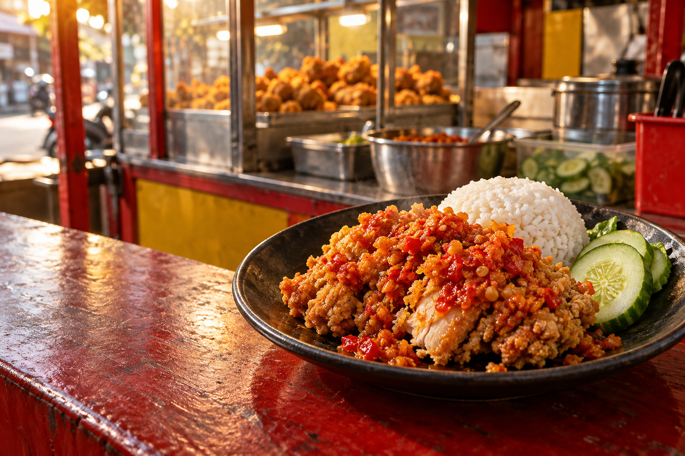
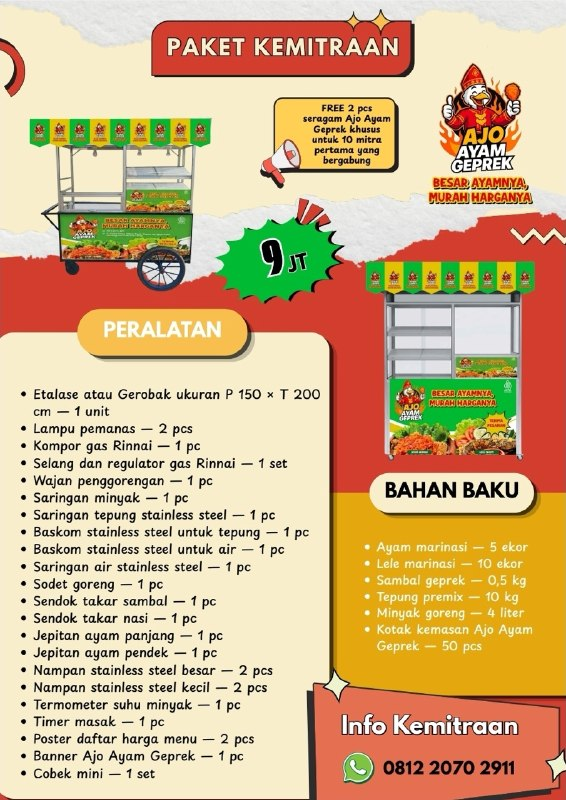

BRAND KUAT
Visual mudah dikenali untuk pasar street food.
Peluang usaha ayam geprek dengan paket lengkap—dari peralatan, bahan baku awal, training, sampai dukungan operasional.

BESAR AYAMNYA,Usaha yang dekat dengan pasar
Visual mudah dikenali untuk pasar street food.
Ayam geprek adalah menu familiar untuk banyak segmen.
Satu paket usaha yang jelas untuk mulai berjualan.
Panduan awal dan pendampingan saat memulai.
Dukungan marketing dan operasional berkala.

PAKET USAHA SIAP JUAL
Paket kemitraan
Siapa yang bisa mulai?
Alurnya jelas
Ceritakan rencana dan lokasi usaha Anda.
Pahami isi paket sebelum mengambil keputusan.
Lengkapi proses pemesanan paket.
Pelajari resep dan cara operasional.
Siapkan outlet dan mulai melayani pelanggan.
AJO di lapangan
Pertanyaan yang sering ditanya
Paket kemitraan AJO Ayam Geprek mulai dari Rp9 juta. Hubungi tim untuk detail kebutuhan sesuai rencana usaha Anda.
Paket mencakup peralatan utama, bahan baku awal, training, panduan operasional, branding, seragam, dan dukungan berkala.
Ya, bahan baku awal termasuk dalam paket seperti ayam marinasi, sambal, tepung premix, minyak goreng, dan kemasan.
Ya. Training dan panduan operasional disiapkan agar mitra dapat memahami proses sebelum mulai berjualan.
Waktunya menyesuaikan kesiapan lokasi dan proses pemesanan. Konsultasikan rencana Anda dengan tim AJO.
Bisa dikonsultasikan. Kirim lokasi usaha Anda melalui WhatsApp untuk informasi proses dan ketersediaan.
Konsultasikan paket kemitraan dan lokasi usaha Anda bersama tim AJO Ayam Geprek.
CHAT WHATSAPP SEKARANG